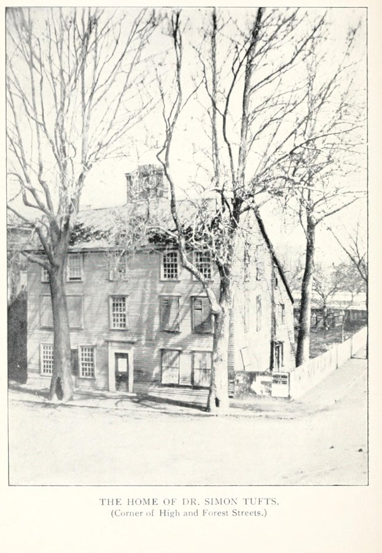
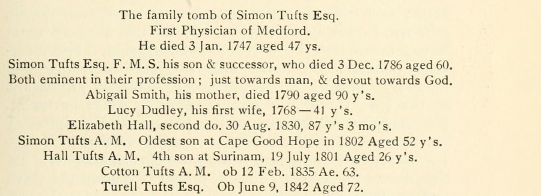
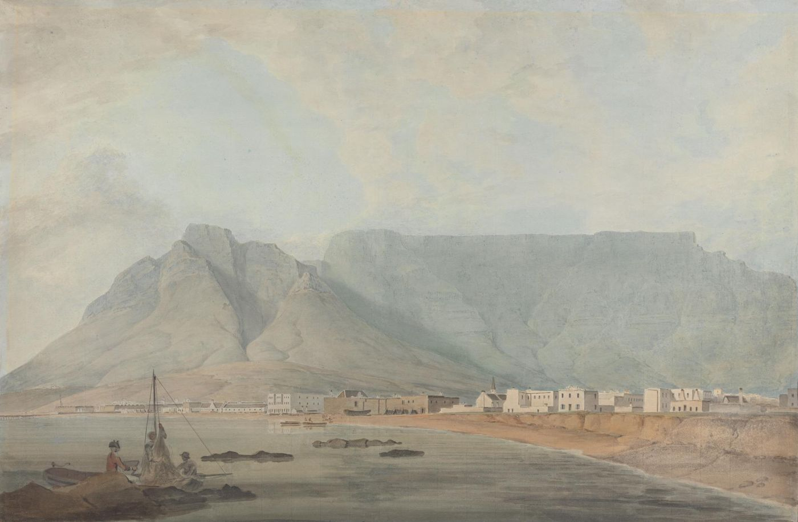

Biography
Simon Tufts, Harvard 1767, was a merchant and a committed Loyalist. He was charged with selling tea, banished, and his estate was confiscated. He died at the Cape of Good Hope on his way home from India.
Merchant of India: His Story in His Own Letters

Simon Tufts was the first son of Dr. Simon Tufts and Lucy (Dudley) Tufts, born in Medford in 1750. His favorite sister, Lucy, born in 1752, married Benjamin Hall, Jr., in 1777, and his half-brother was Turell Tufts. Ruth Dame Coolidge found that he “does not seem to have served in the Revolution.” (Ruth Dame Coolidge, “Simon Tufts the Third, Merchant of India,” Medford Historical Register XLI, no. 3 (September 1938), pp. 35–36)
and Lucy (Dudley) Tufts, born in Medford in 1750. His favorite sister, Lucy, born in 1752, married Benjamin Hall, Jr., in 1777, and his half-brother was Turell Tufts. Ruth Dame Coolidge found that he “does not seem to have served in the Revolution.” (Ruth Dame Coolidge, “Simon Tufts the Third, Merchant of India,” Medford Historical Register XLI, no. 3 (September 1938), pp. 35–36)
His later life is told in a series of letters he wrote to his brother-in-law Benjamin Hall, Jr., preserved among the Hall papers of the Medford Historical Society and copied by the Works Progress Administration in 1938. In 1787, writing from London after learning of his father’s death, he said he would soon “embark for Ostend and thence to the East Indies,” and that he had sent “my picture in a shagreen case by Captain Scott” for his sister Lucy. (Ruth Dame Coolidge, “Simon Tufts the Third, Merchant of India,” Medford Historical Register XLI, no. 3 (September 1938), pp. 37–38)
His ship reached Bombay on January 19, 1788. A post he had been promised, under an Englishman acting as agent for the Emperor of Germany in India, ended when that man died. On Prince of Wales’s Island (Penang) he lost the use of his limbs for two months; the ship carrying his goods to Bengal was never heard of again. He reached Calcutta on March 29 and took charge of works at Omeidpore, about 18 miles away, that had once been “the most extensive works, in India of Rum Indigo. Sugar. & Silk.” (Ruth Dame Coolidge, “Simon Tufts the Third, Merchant of India,” Medford Historical Register XLI, no. 3 (September 1938), letter of Dec. 8, 1789, pp. 38–39)
Letters from Omeidpore in 1792 and 1793 settle his share of his father’s estate. The farm house and barn had been set off to him, “not the dwelling house in which I was born” (the editor notes: “The house in the Square”). The land joined the twenty-nine acres belonging to his sister, “making in the whole Sixty two acres,” and he asked that it be kept together. He gave Lucy the family plate left to him, and he sent his respects to “our old Friend Genl. Brooks and all my friends in Medford for I have and alway shall have a Regard for the little place from which I drew my first breath.” (Ruth Dame Coolidge, “Simon Tufts the Third, Merchant of India,” Medford Historical Register XLI, no. 3 (September 1938), pp. 40–43)
Failing health drove him to Cape Town by May 1797. There he set up a young man in the firm of Bray, Venables & Co., and in March 1801 he reported that rum from Benjamin Hall’s Medford distillery “has been lik’d at the Cape by the Dutch People.” He still hoped to visit his native country. Instead, a Cape Town firm wrote to Mrs. Lucy Hall that her brother had died “on the fifteenth of the present month”; his will left her the property from their father’s estate and £1,032 10s. held in London. (Ruth Dame Coolidge, “Simon Tufts the Third, Merchant of India,” Medford Historical Register XLI, no. 3 (September 1938), pp. 44–47)

He is remembered on the family tomb in Medford’s first burying ground, on Salem Street by the gate, which Coolidge transcribed:
“The family tomb of Simon Tufts Esq. First Physician of Medford. He died 3 Jan. 1747 aged 47 ys. Simon Tufts Esq. F. M. S. his son & successor, who died 3 Dec. 1786 aged 60. Both eminent in their profession; just towards man, & devout towards God. Abigail Smith, his mother, died 1790 aged 90 y’s. Lucy Dudley, his first wife, 1768 — 41 y’s. Elizabeth Hall, second do. 30 Aug. 1830, 87 y’s 3 mo’s. Simon Tufts A. M. Oldest son at Cape Good Hope in 1802 Aged 52 y’s. Hall Tufts A. M. 4th son at Surinam, 19 July 1801 Aged 26 y’s. Cotton Tufts A. M. ob 12 Feb. 1835 Ae. 63. Turell Tufts Esq. Ob June 9, 1842 Aged 72.”
Ruth Dame Coolidge, “Simon Tufts the Third, Merchant of India,” Medford Historical Register XLI, no. 3 (September 1938), p. 33. View the page scan
⚑ Unverified
Date of death: the tomb says 1802, aged 52; Tufts Kinsmen Vol. I gives December 1801. The executors’ letter quoted by Coolidge is dated only “1801” in her text. Loyalist record: Coolidge does not mention the 1775–1778 charges recorded in Tufts Kinsmen. Portrait: the miniature “in a shagreen case” sent to Lucy Hall in 1787 has not been traced; it may survive among Hall family or Medford Historical Society holdings. Note: Pending further work.
Service Record
Town: Medford; Boston; Cape Town · Dates: 1750 – 1801
Loyalist. This man sided with the Crown during the Revolution. He is included as part of the family record, not as a Patriot soldier.
Born 7 Apr. 1750 in Medford; died Dec. 1801 at Cape Town, South Africa; Harvard 1767. (Tufts Kinsmen, Vol. I, p. 142, family no. 29-1)
Devout Loyalist, losing his commerce; charged in 1775 by the Boston Committee of Inspection with selling tea, examined, and made a sworn statement that the Committee published. (Tufts Kinsmen, Vol. I, p. 142, family no. 29-1)
Arrested by the Council of Massachusetts in April 1776, proscribed and banished; his estate was forfeited and confiscated in 1778. Returning home from India after the war, he fell sick in port at the Cape of Good Hope. (Tufts Kinsmen, Vol. I, p. 142, family no. 29-1)
Family Connection
Family number 29-1 in Tufts Kinsmen, Vol. I. Parents are not named in the extract seen.
Relatives with profiles on this site: father Dr. Simon Tufts (1727–1786) ; grandfather Dr. Simon Tufts (1700–1747); uncle Dr. Cotton Tufts
; grandfather Dr. Simon Tufts (1700–1747); uncle Dr. Cotton Tufts ; half-brother Turell Tufts; half-brother Hall Tufts (1775–1801).
; half-brother Turell Tufts; half-brother Hall Tufts (1775–1801).
Spouse(s)
Not found in the sources checked (Brooks 1855 Register of Families; Wild; Find a Grave data on file; Tufts Kinsmen Vol. I extract).
Authoritative IDs / Index Numbers
| Source | ID / status |
|---|---|
| Perseus person index (auth=) | auth=tufts,simon. This is a name-level key shared by every Simon Tufts in Perseus, not a personal ID. Use it with the passages cited on this page. |
| Find a Grave memorial | Uncertain: 26903840. Flagged; not used. |
| Brooks, History of Medford (1855) register no. | Checked, no entry confidently matched |
| Tufts Kinsmen, Vol. I family no. | 29-1 |
| Mass. Soldiers and Sailors | Not yet checked for this page |
| DAR ancestor no. | Note: Pending further work. |
| Adams Papers document IDs | ADMS-06-18-02-0162 (editors’ identification) |
| FamilySearch ID | Note: Pending further work. |
| Geni profile | Note: Pending further work. |
| WikiTree ID | Note: Pending further work. |
| Town / vital records | Medford VRs not yet checked by volume and page |
Only IDs confirmed against dates and family are given as matches. “Not yet checked” means the source has not been searched; “Checked, not found” means it was searched without a match.
⚑ Unverified
Not to be confused with Dr. Simon Tufts (11-1). No other source on this site has yet been checked for this man.
Pictures



In the Newspapers
In the autumn of 1774 The Massachusetts Spy carried advertisements for goods “To be SOLD, by SIMON TUFTS, At the Store adjoining Mr. Henry Prentiss, near Faneuil-Hall.” Whether that merchant is this man is Unverified. See Collections.
In the Newspapers
The Boston Gazette lists a Simon Tufts among the Harvard masters of arts in July 1770, and on April 3, 1775 printed a Simon Tufts’s sworn apology for buying tea in breach of the Continental Association. Whether either is this man is Unverified.
See Collections.
Harvard: Possibly class of 1767
A Simon Tufts graduated in 1767. Whether he is this man is Unverified. (Clifford K. Shipton, Sibley’s Harvard Graduates, vol. XVI, pp. 540–542 (sketch location from Andrew W. Pollock’s Index of Graduates; sketch text not seen)) See Harvard College.
The 1786 London Newspaper Affair
In May 1786 Abigail Adams wrote of claims in the English papers by “Lord Gorge Gorden, mr Simon Tufts and mr Lewis Gray” that John Adams was paid by the French ambassador (MHS). The Adams Papers editors call the source “Simon Tufts Jr., a loyalist refugee,” Cotton Tufts’s nephew (Papers of John Adams, vol. 18, p. 312, note. MHS).
⚑ Unverified
That the Simon Tufts of 1786 is this man (1750–1801) is likely but is the editors’ identification.
Links and Resources
Every source, record, map, survey, marker and artifact tied to this person, gathered in one place. Page numbers are given where a book is cited.
Maps, Surveys and Artifacts
- — The Home of Dr. Simon Tufts, corner of High and Forest Streets, Medford. Frontispiece of Medford Historical Register XLI, no. 3 (September 1938), facing p. 33. Simon Tufts the third (1750–1801/2) said
- — Clipping: inscription of the Tufts family tomb, Salem Street burying ground, Medford. Detail of p. 33, Medford Historical Register XLI, no. 3 (September 1938), from Coolidge’s “Simon Tufts the Third,
- — Cape Town, late 18th century (Samuel Davis). A view of Cape Town by Samuel Davis (1757–1819), Yale Center for British Art. Image: Samuel Davis (Yale Center for British Art). CC0. Source: Wikimedia Com
- Source: Wikimedia Commons — Cape Town, late 18th century (Samuel Davis). A view of Cape Town by Samuel Davis (1757–1819), Yale Center for British Art.Image: Samuel Davis (Yale Center for British Art). CC0.
- Collections — In the autumn of 1774 The Massachusetts Spy carried advertisements for goods “To be SOLD, by SIMON TUFTS, At the Store adjoining Mr. Henry Prentiss, near Faneuil-Hall.” Whether that merchant is this man is Unverified.
- Collections — See Collections .


Markers, Plaques and Places
- Harvard College — A Simon Tufts graduated in 1767. Whether he is this man is Unverified. (Clifford K. Shipton, Sibley’s Harvard Graduates, vol. XVI, pp. 540–542 (sketch location from Andrew W. Pollock’s Index of Graduates; sketch text not seen))
Digitized Books and Journals
- Source: Internet Archive — …the third (1750–1801/2) said in a 1792 letter that he was born in “the house in the Square.”Image: Medford Historical Society, Medford Historical Register XLI (1938), via Internet Archive. Shown for non-commercial historical use.
- Source: Internet Archive (full page) — …XLI, no. 3 (September 1938), from Coolidge’s “Simon Tufts the Third, Merchant of India.”Image: Medford Historical Society, Medford Historical Register XLI (1938), via Internet Archive. Shown for non-commercial historical use.
- Index of Graduates — A Simon Tufts graduated in 1767. Whether he is this man is Unverified. (Clifford K. Shipton, Sibley’s Harvard Graduates, vol. XVI, pp. 540–542 (sketch location from Andrew W. Pollock’s
Archives, Letters and Records
- In May 1786 Abigail Adams wrote of claims in the English papers by “Lord Gorge Gorden, mr Simon Tufts and mr Lewis Gray” that John Adams was paid by the French ambassador · MHS
- …Tufts and mr Lewis Gray” that John Adams was paid by the French ambassador (MHS). The Adams Papers editors call the source “Simon Tufts Jr., a loyalist refugee,” Cotton Tufts’s nephew (Papers of John Adams, vol. 18, p. 312, note. · MHS